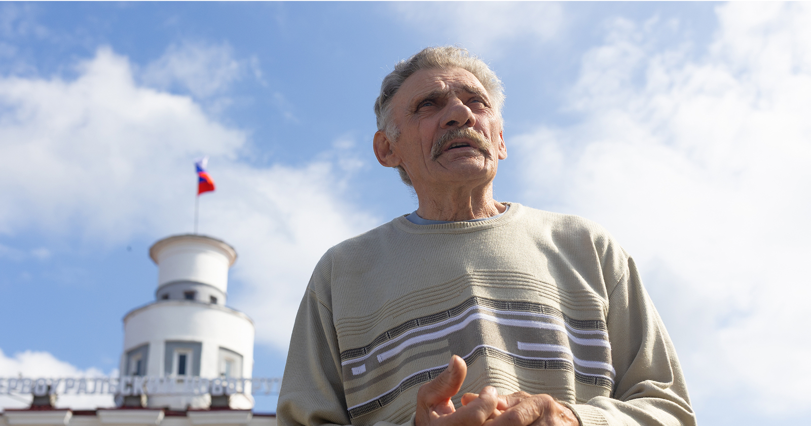
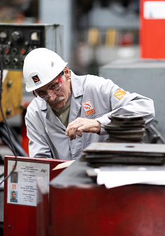
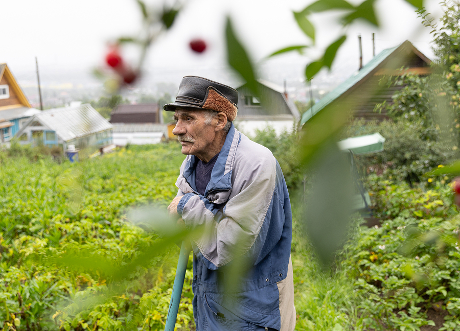
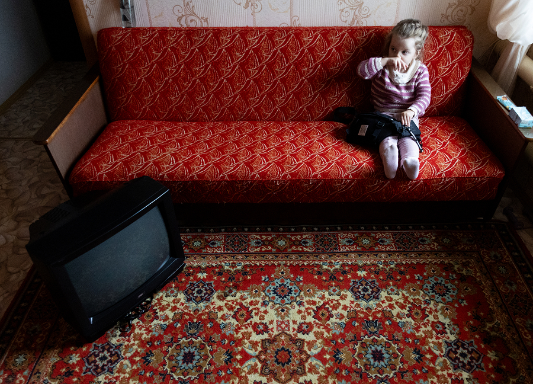
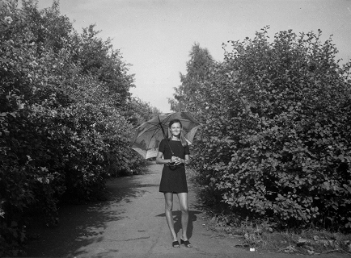
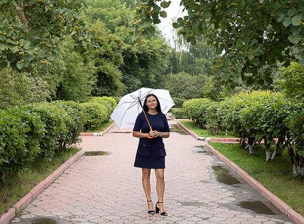
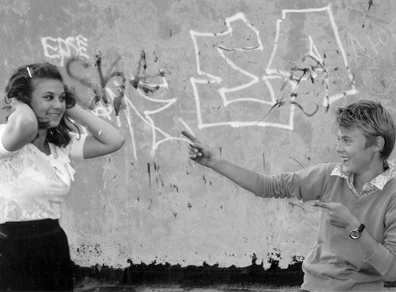

Александр Николаевич Поваляев
Александр Николаевич Поваляев
{kind=link}

Александр Николаевич ПоваляевДата рождения: 09.09.1947. На ПНТЗ работал в 28-м цехе шлифовщиком. Стаж – 47 лет. Неоднократно получал звание «ударника пятилетки». Имеет медаль ветерана труда.
«Я вылитый отец», – Александр Николаевич и сам признает удивительное сходство с Николаем Ивановичем. Такие же роскошные усы, та же грустинка в добрых глазах. Но не только во внешнем сходстве дело. Как и отец, во всех своих занятиях и увлечениях Александр Иванович видит понятную только ему красоту. Возможно, поэтому он так органичен во всех своих проявлениях. Когда неторопливой, но уверенной походкой идет по лесу к черничным местам. Когда выезжает из гаража на своем «Урале» в практически музейном мотошлеме. Когда деловито окучивает на участке картошку. Когда стоит у станка, у которого проработал 47 лет.
Я, наверное, один такой. Поступил на завод в 1965-м и на одном месте 47 лет с небольшим отробил. Две записи: пришел, ушел.
У меня до сих пор не укладывается в голове. Отработать 47 лет. Да еще на одном месте. Я, к примеру, не такой человек, не могу на одном месте сидеть. А дедушка все 47 лет стоял у одного станка. Для меня это вообще сродни подвигу. Все время на ногах, условия непростые. Сейчас-то совсем иначе.
{kind=link}
{kind=link}
{kind=link}
{kind=link}
Помню, приходила к отцу на работу. Он занимался обработкой калибров. Станки были огромные, там их три стояло. Всегда удивлялась, какие это огромные махины. Да и сами калибры тяжелые по 50 килограммов. Только с пенсией оттуда и ушел.
Я сперва в 28-м цеху слесарил запчасти. Где заусенки снимать, где вал подпилить шлицевый. Уставал с непривычки, навыка-то не было. От напильников на руках мозоли. Ну, фрезеровали там, а на чистовую доделывали уже вручную. А потом мы год-два, наверное, поработали, уже нам станки стали доверять, ремонтировать, токарные. Заказчик придет еще, смотрит, как сделано. Если где-то какой-то шум, крестик ставит – исправить.
Станок сломался – сам подшаманишь: раз-раз и поехали дальше. Сейчас там, где я работал, трудится мой ученик, Денис.
Запомнилось из детства, что папа постоянно приносил домой грамоты, медали. Было же в Советском Союзе такое понятие – ударник пятилетки. Вот он по итогам каждой пятилетки приносил награды. Всегда на хорошем счету был на заводе.
{kind=link}
{kind=link}
{kind=link}
{kind=link}
{kind=link}
{kind=link}
Сейчас по заводу не скучаю. Времени на это нет. Внучка вон смеется, что я рано встаю. А что, встанешь в 5 утра, включишь телевизор, новости там, еще что-то. Покормишь скотину, курей, собаку, кошку. Отдохнешь, в восемь снова подъем. По хозяйству что-то сделать, в огород съездить. Где-то полить, где-то прополоть. Уже не можешь без работы, с детства это идет.
Помнится, папка с мамой на покосе, сестра не знаю где. Мне пять лет, меня с Шурочкой маленьким водиться оставляли. Ему годик был. А однажды он взял свою рубаху, пуговицу в рот засунул, грыз-грыз, отгрыз ее и подавился. Никого нет, что мне делать-то? Он уже глаза закатил, я его на плечо забросила, побежала на улицу, помощи искать. Кричу: помогите, помогите. Пока бежала, пуговица у него внутрь и проскользнула. Вот так вот, получается жизнью мне обязан.
Сейчас приходит в гости – наговориться не можем, все вспоминаем-вспоминаем. Он то не помнит, это не помнит. А я ему все рассказываю, как он маленький был, как под кровать залезал и костер нам там разводил.
{kind=link}
{kind=link}
{kind=link}
Детство как проходило-то: с утра в школе, а потом в хоккей играли. Заливали площадку. Воду таскать приходилось. Вместо клюшки, бывало, придешь в лес, увидишь загнутую палку, возьмешь. У меня еще лыжи самодельные были. Как баню топили, я их загибал. Мать затопит, я лыжи в котел. Потом на забор: пока мягкие, груз вешал, маленько загибались. Хватало, чтобы раза два прокатиться. Потом снова разгибались. Это ж береза. Тяжелые были такие лыжи, а кататься надо. Накатаешься, придешь домой, ой как есть охота. Хлеба черного отломишь, да с солью, да с молоком. И не пищали, что ничего другого нет.
В 23 года у меня появился моторный велосипед. Это вообще умора. Вроде с вечера настроишь, а как ехать – заглох. Потом купил мотоцикл «Ковровец». Покатался и на нем. И в лес, и на рыбалку. У брата «Урал» появился, и мне такой же захотелось, чтобы в нем покопаться. Сейчас у меня уже третий «Урал». Заведешь его — душа поет. А тот первый я подремонтировал, отличная машина получилась. На Пильненской горе, что рядом с нами, такая кручь, а мотоцикл только так залетал.
Шурочка к технике очень хорошо относится, добросовестно. Вот как осень начинается, он здесь мотоцикл переберет, все смажет, а ежели какие запчасти ему надо, то найдет.
{kind=link}

Описание фотоУ нас на работе мастер был, тоже держал «Урал», а потом машину приобрел. Так он мне подарил два шлема. Тебе, говорит, подарок как хорошему мотоциклисту.
Я и сейчас к магазину на мотоцикле подъеду – молодежь заглядывается. Какого года, да сколько вам лет, что на мотоцикле ездите. Это говорю, «Урал», а не «Хонда» вам какая-нибудь.
Мотоцикл всегда на ходу. Я не усну, если с мотоциклом что-то не так будет. Я, кстати, его один раз потерял, когда в лес по грибы ездил. Поставил его на полянке, а он зеленый, как и все вокруг. Возвращаешься, крутишься, ищешь – нет нигде его. Потом понял, что не на ту поляну вышел. Но никогда не было, чтобы заблудился. Хорошо в лесу ориентируюсь.
Они и теперь за грибами да ягодами на мотоцикле ездят. Видимо, бедное детство сказывается. Надо делать запасы, запасы, запасы.
Это от отца пошло. Он по грибы, по ягоды любил ходить и нас с собой брал. Далеко ходил. Если выбирать, то ягоды собирать интересней. Отец говорил: «Одну ягодку беру, на другую смотрю, третью примечаю, а четвертая мерещится». У меня и штаны плотные, чтобы на коленях собирать. Рядом гора Пильная. Сейчас там застроили, перепахали все. А бывало, 20 минут пройдешь, и ягод – море. Из грибов особенно люблю соленые грузди.
Еще рыбалку люблю. Как минутка свободная, быстрее туда. Есть свое место. Там чебачок водится. Бывает, разденешься, сидишь, как в квартире. Покормишь маленько, смотришь, зашевелился. Начинат, начинат, начинат – азарт просыпается…
{kind=link}
{kind=link}
{kind=link}
{kind=link}
{kind=link}
Шурочка всегда умел удивлять. Вот даже как он женился. На поселке девчонок полно было, все девчонки подружки были, одноклассницы. Нет, не надо. Ему надо кого-то незнакомого. А потом они постоянно ссорились. Когда Шурочка женился, жили с мамой. А мама что-то со снохой не больно-то. Та с норовом, а мама хотела ее «по-поваляевски» выучить. А у Шурочки еще и двойня родилась. Ушел он в итоге на квартиру жить со своей семьей.
Уже и не вспомнить, как мы с женой познакомились. С кем-то из друзей шли по улице. Такая красивенькая стояла. Шапочка у нее волнами. Встали, о чем-то заговорили. От знакомства до свадьбы – пять лет ухаживаний прошло. Она в магазине работала, ходил провожать ее обратно вечером.
Дедушка – добрый. С двоюродной сестрой Джансу защищал нас всегда. Помню, как мы детьми шалили на улице, из каких-то ящиков что-то вытаскивали. Это соседка увидела, да как взъелась и давай меня крапивой лупить. Дедушка увидел, такой скандал закатил. Мол, это же дети, что вы творите. Еще дедушка очень хозяйственный. Всегда все распланирует, когда кого покормить. Сам дом построил. Точнее, дом выдал завод, а вот пристрой, баня, второй этаж – это все он своими руками.
{kind=link}

Описание фотоНу, какой он? Во-первых, работящий. Во-вторых, ответственный. Если за что-то берется, доводит до конца. Вот у меня плохо двери закрываются, я ему говорю, слушай, сыну некогда, ты мне ближе к зиме двери отремонтируй. Он говорит, сейчас посмотрю, посмотрел, так, так, ладно, все, сделаю. По огороду всегда посоветует, что как сделать.
У меня, как и у мамы, нет потребности столько пахать, вести хозяйство. В то же время я понимаю, что это его жизнь. Если дедушка перестанет двигаться, бросит свое дело, тяжело ему станет. А так у него всегда нагрузка, он весь в заботах и потому продолжает оставаться таким живчиком, особенно для своего возраста. На мотоцикле гоняет, картошку сажает. Я бы так не стал, но, может, просто я еще молодой?
Да просто хорошо зарабатывать все стали. В 65-м году получишь 120 рублей, что на это купишь? Да и в магазинах ничего не было. Я на нынешнее поколение не обижаюсь, пусть живут, как хотят.
Главное, что я себя могу назвать счастливым. Я неплохо жизнь прожил. По молодости весело было, но шибко мы не гуляли. Знали меру. Повеселимся с другом, он к своей девчонке, я к своей. Вот и все. Ни о чем не жалею.
{kind=link}
{kind=link}
{kind=link}
{kind=link}
Ольга Поваляева


Ольга с зонтом на аллее около ж/д станции, 2025 год
Кирилл Богданов
